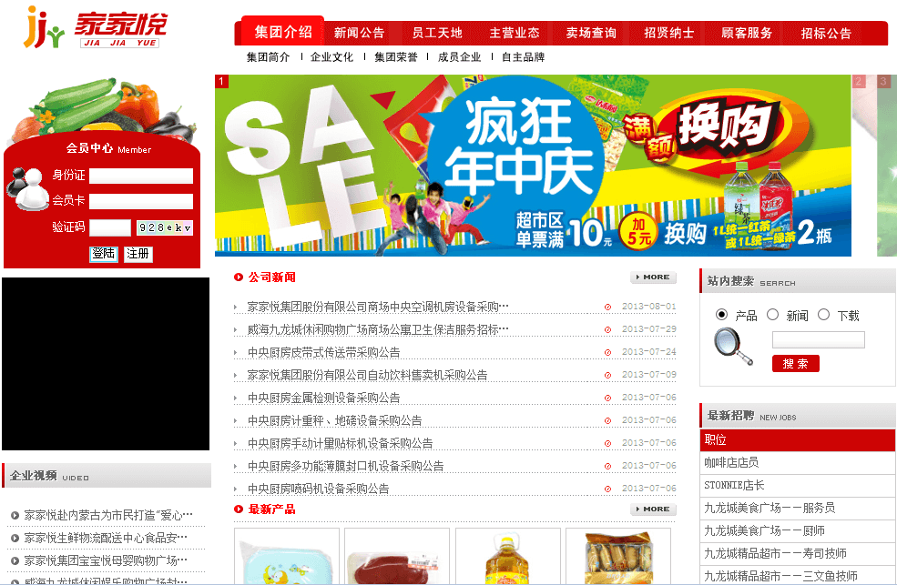

山东家家悦集团云容灾系统
方案概述
山东家家悦集团有限公司是以超市连锁为主业，集物流配送、食品加工和农产品批发于一体的大型连锁企业集团，是山东省内最大的连锁超市企业。2011年，实现销售收入150亿元，名列中国快速消费品连锁百强第11位。但是巨大的物流需求以及500多连锁网点每日产生的高数据量，对数据的备份处理速度、数据的安全性、机房的可靠性、系统应对灾难故障等方面提出严峻挑战。
方案架构
山东省内最大的连锁超市企业——山东家家悦集团云容灾系统在浪潮济南云计算中心成功上线落地，标志着浪潮济南云计算中心成功迎来“新成员”，浪潮云计算家族不断壮大。此系统将覆盖家家悦在山东省内34个市县的500多家直营连锁门店网络、食品工业园、农副产品交易中心以及2万多名员工，提供云端数据备份以及灾难恢复服务。

方案价值
在集团云计算战略的引领下，2012年浪潮软件云服务产品事业部积极践行云计算战略，积极与家家悦集团沟通，提出以浪潮济南云计算中心的强大IaaS层基础为依托的解决方案，保证对家家悦集团的数据及系统提供便捷、安全、可靠的云容灾服务。此系统将浪潮云容灾服务部署在内，无需改变现有系统状态；充分利用现有的基础架构，无需购买或安装昂贵的组件，降低总拥有成本；为企业提供了一个稳健且透明的解决方案，实现了数据备份操作和管理成本的削减；需要备份的文件在传输到云计算中心之前处于加密状态，而这些数据抵达目的站点时也仍然处于加密状态，唯一的密钥只掌握在客户手中；不论站点位于何处，云备份和恢复系统都能够即时恢复数据；云计算中心的灵活扩展性使其能够轻松应对业务环境内数据的增长和变更。该服务在短期内使家家悦集团拥有了远程的云端数据备份系统，可以应对重大灾难、紧急事件对数据的安全性所造成的威胁，对应用系统和业务系统的安全、可靠、稳定运行提供强有力的保障。
此系统在浪潮云计算中心的成功上线，标志着浪潮的战略性云计算服务再获肯定，伴随着系统的成功上线，必将使越来越多像家家悦这样的企业客户切实感受到浪潮云服务的价值所在。